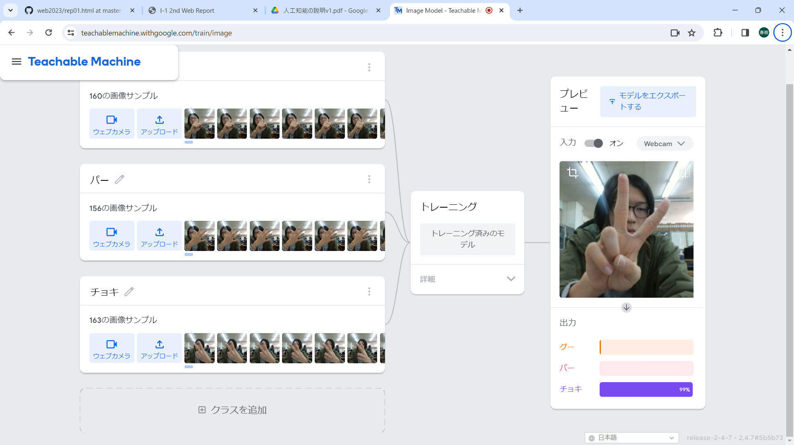
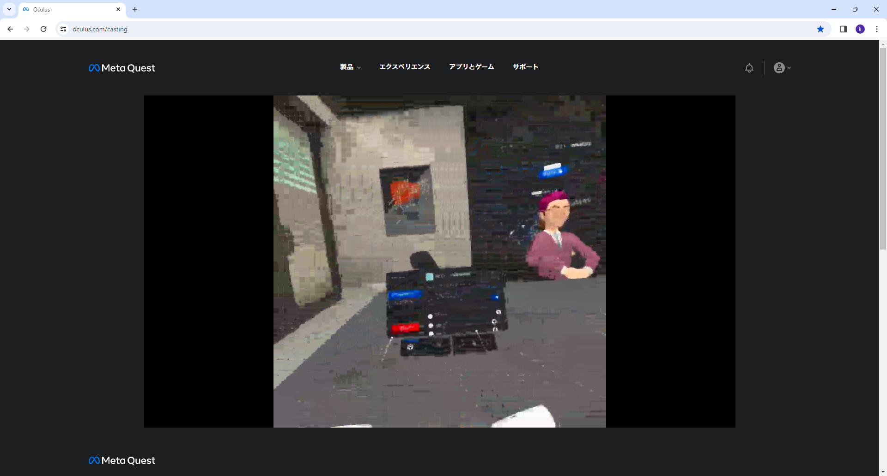

第2週目
2-1 １週目のレポートをHTMLで作る
１週目のレポート
1.内容
ないようないよう
2.感想
かんそうかんそう
2-2 機械学習体験

1.内容
じゃんけんの手をしてそれをコマドリして，それを機械学習が認識して実際に読み込ませた動きをカメラ上ですると，グーが何％，チョキが何％，パーが何％のような形で判別される．
ただ精度は高いとは言えないものではあったが，明らかなもの100％で表示された．
2.感想
今回じゃんけんで出した手を判別という形でやりましたが，ろぼっと倶楽部で今回やった機械学習を使ってやると，自動機を作るときに役立てたいなと思いました．
2-3 VR（バーチャルリアリティー：Virtual Reality）会議室の体験

1.内容
サポートするときは相方が見ているものを聞きながら，資料を見て指示を出す必要がありました．
自分がやっているときは，絵をかいたり話せたりと比較的自由にできました．
2.感想
かんそうかんそう